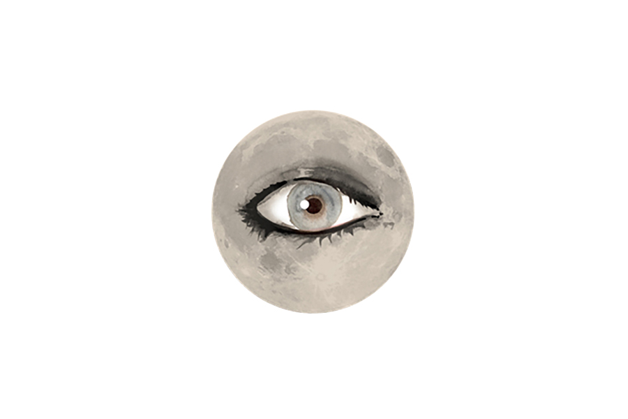
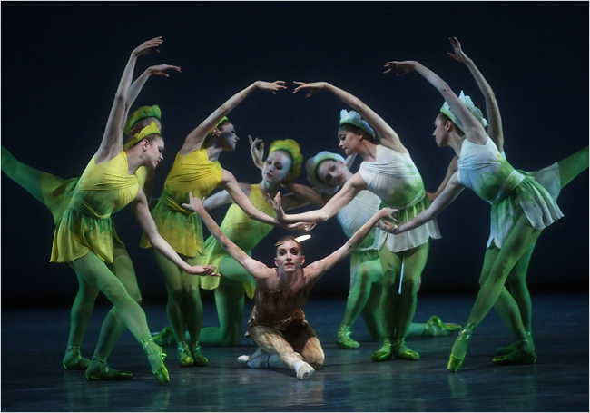

Ballet is an extreme art. I collaborated with Chris Wheeldon (choreographer) and Bright Sheng (composer) to
help bring Oscar Wilde's The Nightingale and the Rose to NYCBallet at Lincon Center.
Instead of traditional sets, I projected different scenes onto mult-layed scrims. I created a series of hand-painted and computer-generated animations to create an illusory garden where the plants grew before your eyes and mingled with abstracted marks to encircle the stage. Watching over the dancers was an animated eye projected onto the moon. Read the review in the NY Times.
Instead of traditional sets, I projected different scenes onto mult-layed scrims. I created a series of hand-painted and computer-generated animations to create an illusory garden where the plants grew before your eyes and mingled with abstracted marks to encircle the stage. Watching over the dancers was an animated eye projected onto the moon. Read the review in the NY Times.
ROLE
Artist, Production Designer
PRODUCTS
Set design, video projections, and animations
RESULTS
Awe and poignancy rendered through the lens of the human condition.

Photo by Paul Kolnik